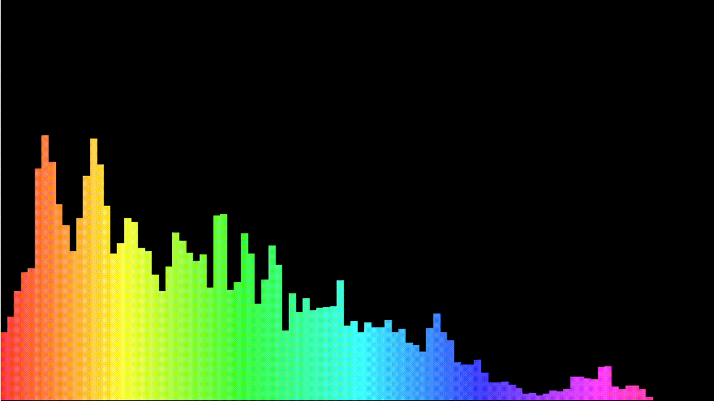

Asteroids
Embarquez pour une aventure intergalactique dans "Asteroids", un jeu de style arcade classique créé à l'aide de la bibliothèque Raylib en C. Dans ce voyage palpitant à travers l'espace, prenez le contrôle d'un vaisseau spatial naviguant à travers un champ d'astéroïdes périlleux. Votre mission est de survivre le plus longtemps possible en détruisant les astéroïdes entrants et en évitant les collisions.
Music Visualizer
Découvrez la magie de la musique avec le "Music Visualizer", un outil envoûtant construit avec C et Raylib. Plongez-vous dans un voyage audio-visuel captivant alors que vos morceaux préférés prennent vie avec des couleurs vibrantes et des motifs dynamiques.
Pong
Bienvenue dans "Pong", un jeu classique de ping-pong virtuel donnant vie avec C et Raylib. Plongez dans une compétition palpitante contre un ami dans des duels multijoueurs en tête-à-tête.
Tetris
Préparez-vous à une expérience de résolution de casse-tête addictive avec "Tetris", un jeu classique de Tetris conçu avec C++ et Raylib. Plongez dans un monde de blocs en chute et de manœuvres stratégiques alors que vous visez à effacer des lignes et à accumuler des points.